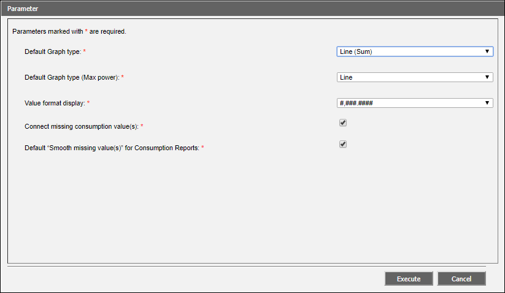
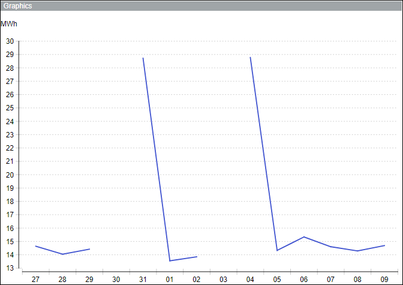
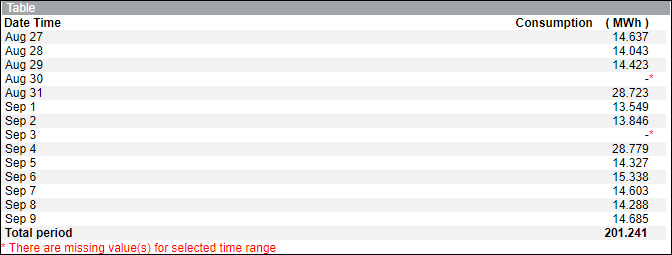
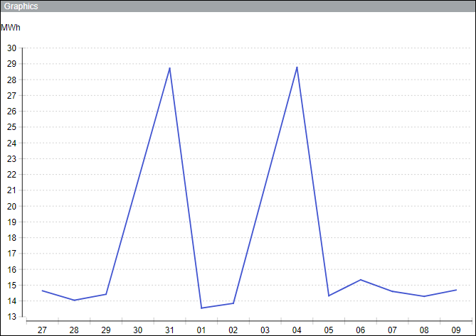
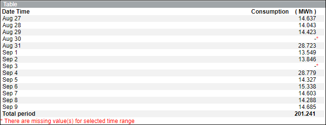
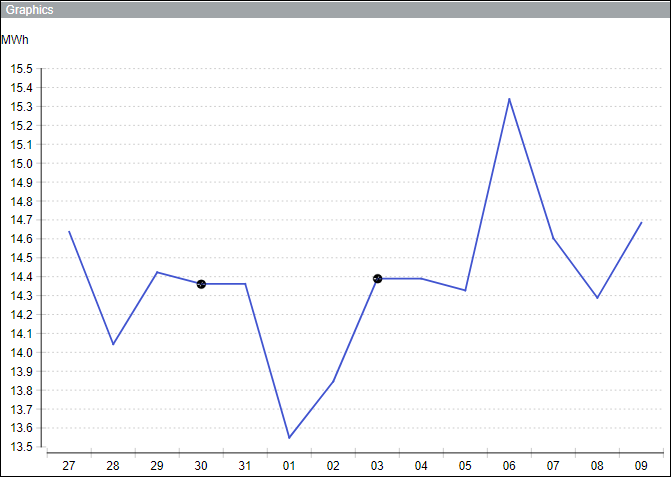
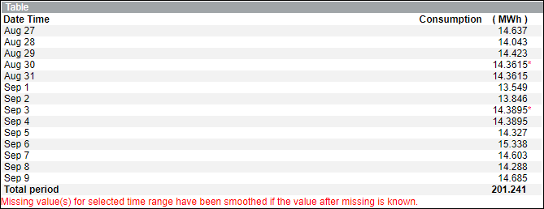
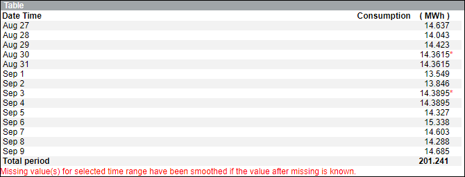

Consumption Cache
The information related to energy consumption is stored in a cache.
A single cache document records the consumption data of all the configured meters for a period of one month. At the start of the next month, a new document is created that records the consumption details. You can schedule this cache generation activity to run at a specified time by performing the steps in Scheduling Cache Generation.
The generation of cache happens as scheduled and the new consumption details of all the meters are appended to the existing consumption details. These new details include the data of all the meters for the current three months, including the data from the last hour of the previous day to the last hour of today.
There might be the following situations where you need to re-generate the cache for a certain time period:
- When you migrate to a new version of Desigo CC .
- If the managed meter is configured with incorrect parameters. In this situation, you must make the required corrections to the meter configuration, and thereafter re-generate the cache for the same time period. The instances of incorrect parameters can include either of the following; media groups, media units, offset, metering point, usage, incorrect path historization, and so on. For example, assume that you have configured a managed meter with the output unit as MWh, and the cache is generated from 1st June, 2016 to 31st January, 2017. During this period, if you observe that the output unit is erroneously mentioned at MWh, instead of KWh, then the values in the cache will also have incorrect values of consumption. In this situation, you must correct the incorrect output unit and thereafter re-generate the cache from 1st June, 2016 to 31st January, 2017.
The default Tomcat memory of 2500 MB is insufficient to generate cache for a system having more than 500 managed meters configured. In such situations, you must set the Tomcat memory to a higher limit, for example, 6000 MB.
Connecting and Smoothing Missing Consumption Values
In reports displaying consumption data, any missing data can lead to huge spikes in consumption values in graphs and blank values in tables. This can be avoided by connecting and smoothing the missing values.
You can connect and smooth these missing values using the Connect missing consumption value(s) check box in the Parameter dialog box accessed by clicking Edit next to Energy Reports Settings on the Configuration Page and Smooth missing value(s) check box in the Parameter dialog box accessed on executing a consumption report. For information on executing a report, see Executing Energy Reports.

Default “Smooth missing value(s)” for Consumption Reports check box – When selected, the Smooth missing value(s) check box is automatically selected.
The following scenarios will provide information on the consumption report output depending on selection or non selection of the Connect missing consumption value(s) and Smooth Missing Value(s) check boxes.
Scenario 1: Connect missing consumption value(s) and Smooth Missing Value(s) check boxes are not selected.
Graph:
- Displays a gap for missing data.

Table:
- Displays a blank consumption value with a red asterisk (*) for a missing date.
- Displays a message that there are missing value(s) for the selected time range.

Scenario 2: Connect missing consumption value(s) check box is selected and Smooth Missing Value(s) check box is not selected.
Graph:
- Displays a spike for missing data.

Table:
- Displays a blank consumption value with a red asterisk (*) for a missing date.
- Displays a message that there are missing value(s) for the selected time range.

Scenario 3: Connect missing consumption value(s) and Smooth Missing Value(s) check boxes are selected.
Graph:
- Missing data is smoothed and is represented by black circles.

Table:
- Displays the average of the consumption value for the missing date with a red asterisk (*).
- Displays a message that the “Missing value(s) for selected time range have been smoothed if the value after missing is known”.

Scenario 4: Connect missing consumption value(s) check box is not selected and Smooth Missing Value(s) check box is selected.
Graph:
- Missing data is smoothed and is represented by black circles.
Table:
- Displays the average of the consumption value for the missing date with a red asterisk (*).
- Displays a message that the “Missing value(s) for selected time range have been smoothed if the value after missing is known”.
